⚠️ 注意（仅供阅读）：此内容为简化版 Markdown，仅供阅读和总结，
不可直接用于 createDocument --content 或 updateDocumentByXml。
如需编辑文档，请使用
getDocumentXml获取完整格式后再通过updateDocumentByXml回传。直接用此内容编辑会丢失样式宏、合并表格、NodeID 等关键信息，导致文档数据损坏。
【🤖AI实战现场-02期】一杯咖啡的时间搞定“经验萃取+PPT制作”全链路
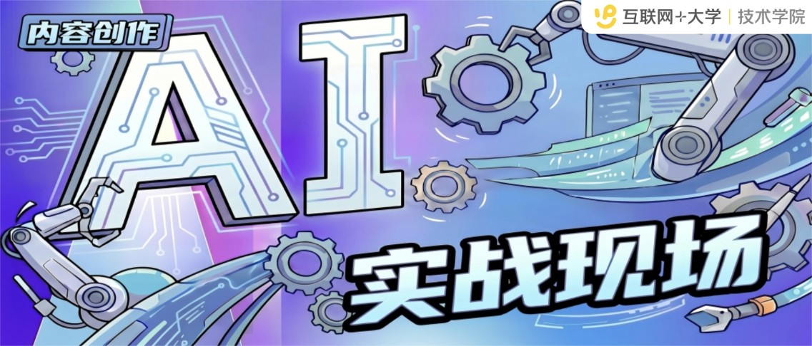
**🎯本期案例🎯**「AI实战现场」系列栏目——每期聚焦一个真实的 AI 使用场景，不讲理论，只看实战案例。小而美、可复用、能落地是本栏目的宗旨。希望通过持续萃取和传播真实实践案例，帮助大家从中获取启发与借鉴，找到属于自己的 AI 实战用法。
⚠️小编特别提醒： 案例来源为真实场景、真实案例、真实踩坑，希望能够给你一些灵感参考。为保护个人隐私，文中人物已作化名处理。
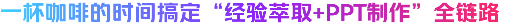
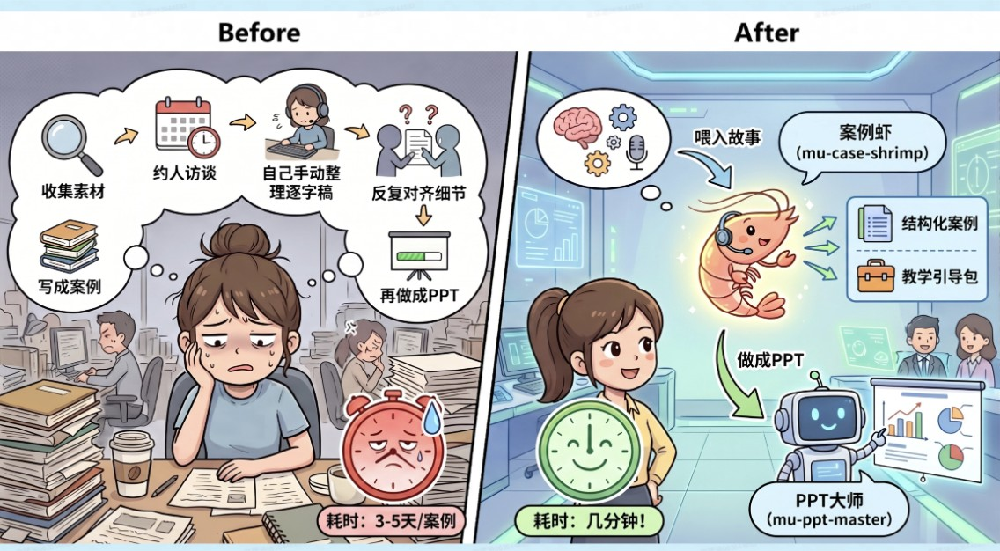
**案例适用对象：****：**🚩 手握大量零碎的会议纪要和访谈素材，但苦于缺乏结构化提炼能力的同学
😫 工作中需要频繁萃取业务经验、制作内训课件的同学
🧑🏻💻 承担团队经验传承任务，但经常受困于“专家没空写”、内容整理耗时过长的同学
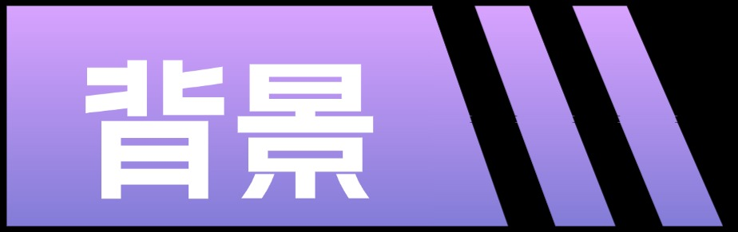
小K是一位产品运营同学，她手头有一个棘手的任务：把业务团队这半年积累的实战经验，做成一套可以在全公司推广的培训课件。问题是——好案例都锁在业务专家的脑子里。
在收集素材时，她遇到了三种典型情况：
有干货，没时间：A部门的老王有“从0到1搭建数据中台”的完整踩坑经历，但他说“太忙了，你帮我整理吧”；
有素材，没逻辑：B团队的小李有三个客户突破的真实案例，但她的复盘文档写得很散，缺乏可复用的框架；
有经验，没沉淀：还有一位资深架构师，他的实战经验极为丰富，但全靠口口相传，从来没有落成文字。
这就造成了一个常见的“死局”：懂业务的专家没时间或不会提炼，负责知识沉淀的同学又难以深挖业务细节。 结果就是——好故事变不成好教材，宝贵的实战经验无法转化为组织资产，知识传承只能依靠低效的“老带新口口相传”。

小K以前的做法是一套纯手工的“人肉流水线”：收集素材与访谈 → 撰写结构化案例 → 设计教学引导 → 制作PPT课件 → 内部审核与修改。完成一次经验萃取与PPT制作，往往伴随着繁杂的文档作业与高频的跨部门协作，极度消耗个人精力。
| 步骤 | 具体操作 | 耗时 |
|---|---|---|
| 收集素材与访谈 | 翻历史复盘文档、会议纪要、项目总结，跟当事人聊细节 | 4-5小时 |
| 撰写案例 | 从零开始写：背景→挑战→决策→行动→结果→复盘，反复调整逻辑 | 2-3小时 |
| 设计教学引导 | 想讨论问题、设置悬念点、编排教学流程、准备参考答案 | 3-4小时 |
| 制作PPT | 把案例内容搬到PPT里，调排版、加配图、做动画 | 3-4小时 |
| 内部审核 | 发给相关人确认事实准确性，根据反馈改2-3轮 | 1-2天 |
从素材到能拿去培训的PPT课件，通常要2-3个工作日。如果同时要做2-3个案例，一周时间基本搭进去了。
关键痛点不只是时间——结构化能力是个门槛。很多一线同学讲起来头头是道，但写成案例就变成了流水账，提炼不出可复用的方法论。

为了摆脱“人肉搬运+手工排版”的低效循环，小K转变了思路：把与专家沟通留给人，把“结构化萃取”和“PPT排版”的脏活累活全权交给AI。
她现在的做法是：用自然语言当“包工头”，指挥两个专门干活的AI Skill打配合——用案例虾（mu-case-shrimp），直接把故事"喂"进去，自动萃取出结构化案例+教学引导包。案例写完后直接说"做成PPT"，自动联动PPT大师（mu-ppt-master）生成培训课件。
| Skill | 干什么用 | 广场链接 |
|---|---|---|
| 案例虾 mu-case-shrimp | 从业务故事/复盘报告/工作经历中萃取结构化案例+教学引导包 | 安装 |
| PPT大师 mu-ppt-master | 将文本/文档/URL转化为高质量SVG矢量PPT，支持72套品牌Design Token + 15种设计哲学 备注：PPT大师 内置的设计风格如下👇 | 安装 |
两个Skill配合干活，装好后直接用自然语言指挥就行，下面小K演示了一个用CatDesk15分钟完成「案例萃取→PPT制作」全流程任务。
以一篇论文 AI辅助阅读对深度阅读能力的影响机制研究 为例
| 操作流程 | 演示示例 |
|---|---|
| Step 0：安装 Skill | 将Skill广场中案例虾 mu-case-shrimp、PPT大师 mu-ppt-master直接安装到你自己的CatDesk或者大象个人助理。 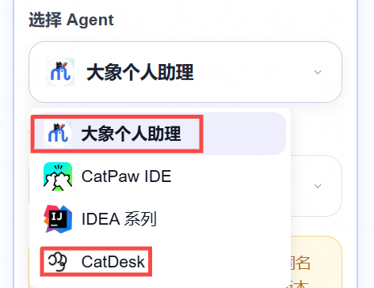 注：下面演示均以CatDesk实际操作为例。 |
| Step 1：素材诊断 将你的素材（如复盘文档、会议纪要、项目总结）直接发给CatDesk。例如： "帮我把这个项目复盘做成案例"（附上学城文档链接或直接贴文字）" 案例虾会自动读取原始素材，识别关键事件节点，并确认后续写作流程。 | 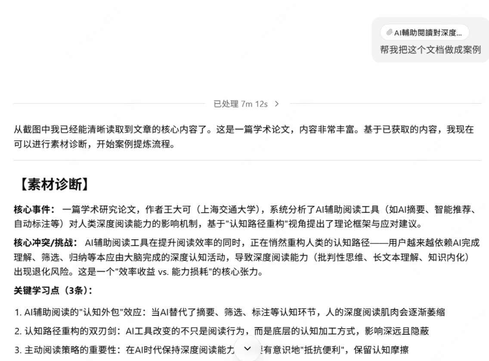 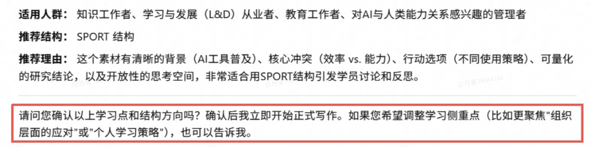 👆如果需要修改学习点和结构方向，可以直接告诉CatDesk。 💡注意事项：素材越详细，案例越好，别只丢一句话概括，把背景、过程、纠结的点、最后怎么解决的都说清楚。案例虾提炼能力强，但它不能凭空编细节。 |
| Step 2：案例写作 根据上一步确认后的案例结构自动适配结构化写作模板，生成案例正文，并附带教学引导包（讨论问题、讲师提示、适用场景等） | 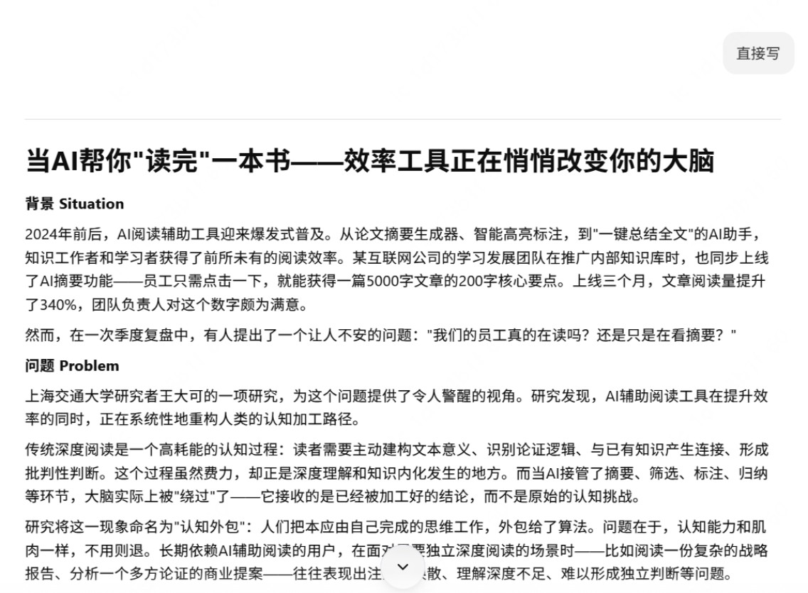 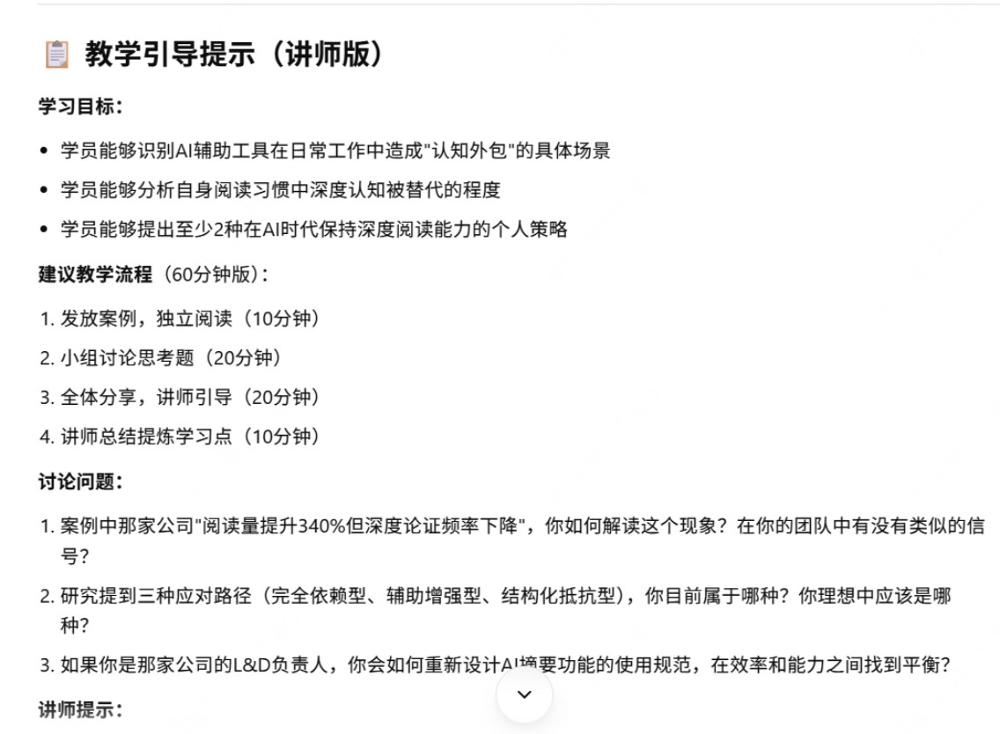 💡教学引导包是亮点：很多人只关注案例本身，忽略了教学设计。案例虾生成的facilitator指南，对第一次带案例教学的人特别有用。 |
| Step 3：案例变PPT 直接告诉CatDesk，例如： "把这个案例做成PPT" PPT大师Skill将自动完成： 1.解析案例结构，规划幻灯片逻辑（封面→背景→挑战→互动讨论→关键行动→结果→经验总结→Q&A） 2. 生成可编辑的PPTX文件，自带主题配色和排版 3. 讨论环节的幻灯片单独设计，方便培训时暂停互动 | 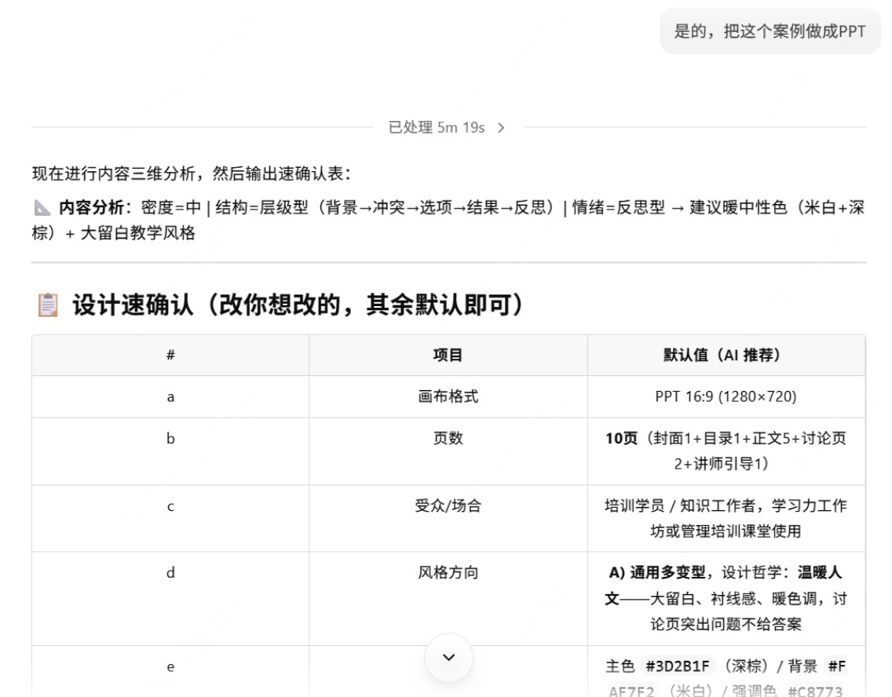 生成PPT效果👇（原始版，未作任何修饰），可根据自己的要求进一步修饰： 比如，将你想要的ppt模板上传至catdesk即可进行自定义版式调整 👇（修改版）参考示例： |
以前需要花费2-3个工作日的任务，现在一杯咖啡的功夫（15分钟），就从一堆散乱的项目素材变成了：
- 一份结构化案例文档（学城链接，可协作编辑）
- 一份培训PPT课件（PPTX文件，可自行调整）
- 一份教学引导包（讨论问题+facilitator指南）
相比以前，效率提升了10倍以上。而且案例结构的专业度和一致性，比大多数人从零写要好——不是因为AI比人聪明，而是它严格按照方法论框架来，不会写着写着变成流水账。
注意事项：
- 素材越详细，案例越好：别只丢一句话概括，把背景、过程、纠结的点、最后怎么解决的都说清楚。案例虾提炼能力强，但它不能凭空编细节。
- 学城文档链接最方便：如果复盘材料已经在学城上了，直接丢链接比复制粘贴省事。
- PPT生成后建议微调：自动生成的PPT在结构和内容上没问题，但配图和排版风格可能需要根据团队习惯调整一下。
- 教学引导包是亮点：很多人只关注案例本身，忽略了教学设计。案例虾生成的facilitator指南，对第一次带案例教学的人特别有用。
- 批量做效率更高：如果手头有3-5个案例要做，可以一个接一个喂，半天搞定一整套培训素材库。
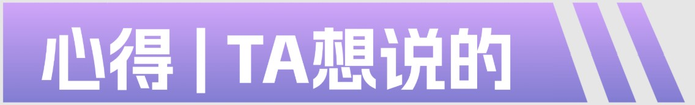
省出时间、精力和脑力，专注核心价值
就拿案例萃取+PPT创作这个场景，核心目的还是为了高效完成任务，解决实际问题才是关键。养虾就是为了帮助人类省出时间、精力和脑力，先承担起那些重复、低价值的事务，让我们可以深度思考，专注核心价值。
君子之治，始于不足见
不要好高骛远，从日常高频的小场景或者一个skill着手，大胆尝试！开始总会有很多不完美或者卡点，从解决问题中逐步熟悉养虾的模式和具体操作，让虾不断复盘经验和坑点，唯有实践出真知，才能慢慢融会贯通。
供稿：傅雄雄 （核心本地商业人力资源部 | 基础研发HRBP）
访谈整理：互联网+大学 | 技术学院